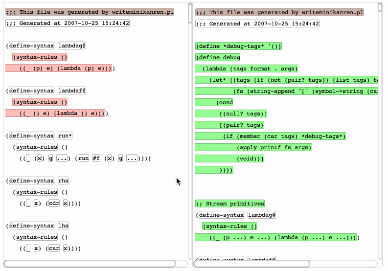
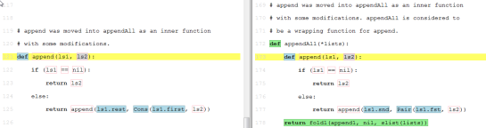

ydiff: a structural program comparison tool

Motivation
I have been imagining a world where programs are not represented as text, but as data structures. They will be edited not with text editors, but with structural editors, which create and manipulate the abstract syntax trees (AST) directly. In such a programming environment, the line-by-line diff utilities and version control tools will stop working, because there are no longer "lines" or "words" in programs.
ydiff is a proof-of-concept for handling this situation. It is a diff tool designed for "structural programming".
Currently ydiff takes pains to parse program text into ASTs, but hopefully in the future programs will be stored directly as data structures so that the parsing step can be skipped. This will enable this kind of tool to extend to all programming languages effortlessly.
Features
- Language-aware. ydiff parses programs, understands basic language constructs and will not make non-sensical comparisons. For example it will not compare a string "10000" with an integer 10000 even though they look very similar. Also, it tries to match functions with the same name before it attempts to destruct and compare functions of different names.
- Format insensitive. The comparison result will not be affected by different number of white spaces, line breaks or indentation. For example, ydiff will not produce a large diff just because you surrounded a block of code with if (condition) {...}.
- Moved code detection. ydiff can find refactored code --- renamed, moved, reordered, wrapped, lifted, combined or fragmented code. Refactored code can be detected however deep they are into the structures.
- Human-friendly output. The output of ydiff is designed for human understanding. The interactive UI helps the user navigate and understand changes efficiently.
These properties make ydiff helpful for understanding changes. It may also be possibly used for detecting plagiarism in programming classes or copyright infringement of code. For large-scale use cases you may be more interested in MOSS, but ydiff is fundamentally more accurate because it parses programs.
Demos
Here are some interactive HTML demos with a pretty nice UI design. The left and right windows are always locked in their relative position. A mouse click on changed, moved or unchanged nodes will highlight the matched nodes and scroll the other window to match. After that, the windows will be locked into their new relative position for browsing.
Okay, here are the demos.
Algorithms and Technical Details
There are basically two main ideas inside ydiff: Tree Editing Distance and Substructure Extraction, plus the use of the neat idea of parser combinators (similar to Parsec).
- Tree Editing Distance. Tree Editing Distance measures difference between two trees. In our case, it is the abstract syntax tree. When we encounter two trees, how do we compare them? If the first nodes of them appear to be the same, then we simply proceed to the next right? But what if the first nodes are different? There are three possibilities:
- The programmer inserted a node into the first tree.
- The programmer deleted a node from the first tree.
- The programmer modified a node in the first tree.
We have to consider those possibilities for each level of nodes, so this naturally becomes a dynamic programming problem. Normally dynamic programming is done by cleverly find out the order to evaluate the problem space, but ydiff uses another important technique: memoization. There is a two dimensional hash table which stores the delta (changes) of two nodes, indexed by the two nodes themselves. The dynamic programming is then done in a recursive way, instead of the usual iterative way. The hash table automatically reduces the cost of recursion to the magnitude of iteration, by avoiding redundant evaluation of the nodes that we already compared.
- Substructure Extraction. Tree Editing Distance can only find the edits insertions, deletions and modifications, but it cannot find refactorization of code. If a piece of code is lifted out of a scope, the Tree Editing Distance function will produce two big changes: a deletion of a big node (for example, an if-statement), and an insertion of a slightly smaller node (with the if (condition) { } wrap stripped off). Notice that although we only made a small change to the program, the resulting delta can be large. What we really want is that it shows a deletion of the wrap (if (condition) { }), but a movement of the parts inside the wrap. This is called Substructure Extraction.Substructure Extraction works by recursively compare the substructures of two nodes, finding possible matches between one node and the subnodes of another. This substructural comparison is only done on the pairs of the resulting insertions and deletions from the Tree Editing Distance function. This little trick captures almost all possible refactorizations between two programs, however deep they are. This is demonstrated in the following picture, where ydiff successfully detects the movement of the function
append into another function appendAll.

- Parser Combinators. The parsers of ydiff are written with the help of a parser combinator library (in Scheme). In addition to the common features of Parsec, it detects left recursion and reports a stack trace of the left recursion, so that the parser writer can find the origin of left-recursion and fix the problem accordingly. This helps a lot when constructing the parsers. For examples, I constructed the JavaScript parser in one day, and the C++ parser in just two days. There are corner cases missing from the C++ parser and especially the macro part, but it parses significant pieces of code correctly (for example some code from Googles V8 project code).
Get the code
ydiff is an open source project. You can follow its development on github: yinwang0/ydiff or get its source code from there.
Ideas about structural version control
I have thought about extending ydiff to a structural version control system and gave a talk on that. You can find the talk slides from another post
|